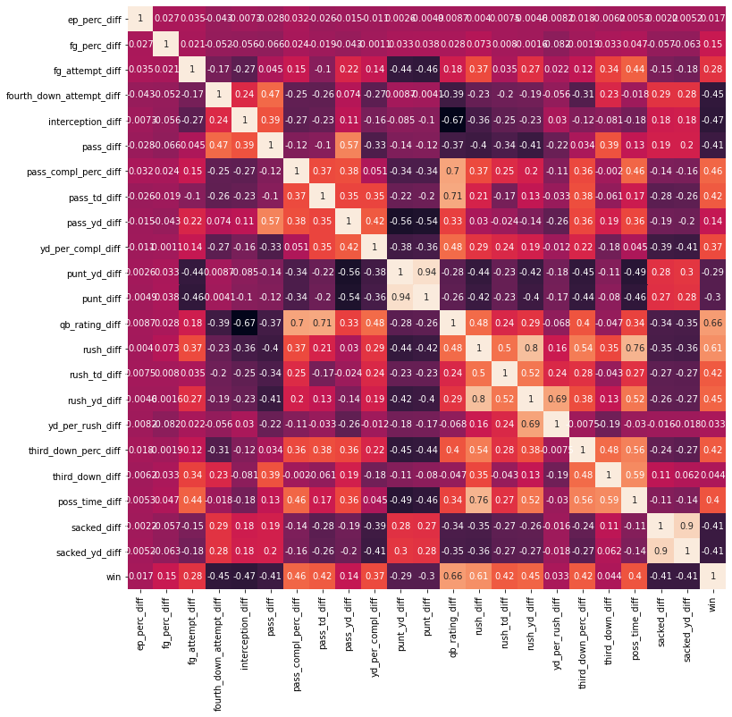

NFL Analysis
This the final report for the second of two capstone projects I completed for the Springboard Data Science Career Track program. To see the code for this project on GitHub, click here.
Problem Statement
All NFL teams can spend up to $182.5 million on their roster, which must have at least 51 players. There will be 11 starters on offense and defense, plus a mix of starters on various special teams. Each of these groups has different positions, and each of these put a different emphasis on height, strength, weight, speed, skill, etc.
Given each team’s fixed budget, it is vital to allocate funds appropriately so that the highest paying contracts go to the players that contribute most to each win. This is impossible unless owners understand each position’s relative importance to winning, which will be the focus of this project. This question would be of greatest interest to owners, franchise executives and general managers.
I relied on data available through the Sports-Reference API, which gives access to data relevant each team, player, and game in the NFL. This includes physical attributes like a player’s age and weight, performance statistics like touchdowns and interceptions, game outcomes, team rankings, and much more. The data includes all available historical data up to the present.
Data Wrangling
The data available through the API is primarily grouped in three tables: Teams, Rosters, and Games. Teams offers full-season statistics for each team, Rosters contains the physical traits of every player on every team, and Games has gameplay statistics (more granular than in Teams) for each player in every game.
I first created a table that had a range of statistics for each team for every season from 1970 to present. This was mostly straightforward, following API documentation.
Next, I game-level data to create a table with the difference in statistics between each game’s winner and loser. I achieved this through SQLite table queries and Pandas dataframe manipulation.
Lastly, I created a table where each row contained gameplay statistics for each position group of each team in each regular season game for the last five seasons. This required significant wrangling and exposed some serious shortcomings of the Sports-Reference API.
The first complication was that not all players had a team abbreviation or had a team abbreviation of ‘2TM’ or ‘3TM’ if they played on two or three teams in a single season. This made it impossible to group by team without cleaning this column. Gameplay statistics for each game were already in order by team, so I was able to create a clean column of team abbreviations by clearing inaccurate team abbreviations and then forward filling nulls.
Second, many players were not given a position title in the Rosters table. This made it impossible to group by position without cleaning this column. To do this, I created several rules to filter those without positions. For example, anyone who punted or kicked a field goal was assigned the label kicker; anyone who attempted more than two passes was assigned the label quarterback, etc. However, defensive players were harder to group this way, since every defensive player – no matter what position they play – can have tackles, sacks, pass deflections, etc. Therefore, the sole determining factor I used to assign positions to defensive players was a weight threshold, which is a very inexact method.
Additionally, the only time offensive lineman appeared in the gameplay data is if they made a tackle after a turnover or recovered a fumble. There is no data available through the API pertaining to blocks, sacks allowed attributed to a certain player, or the like. This is a major impediment to assessing each position group’s impact on wins.
Furthermore, one of the columns provided by the API is simply wrong. The column labeled “fumbles recovered for a touchdown” is in fact a duplicate of the column that provides how many yards were gained after a fumble recovery. This, too, is a major impediment to assessing each position group’s impact on wins, since one of the biggest ways a defensive player can contribute to a win – recovering a fumble for a touchdown – is not included in the dataset.
Lastly, the team abbreviations used in the API’s tables are not standardized, so I had to standardize them myself before joining datasets. My final step was to group positions into position groups and calculate the sums of relevant statistics for each position group.
Exploratory Data Analysis
The NFL is becoming a passing-dominated league. Passing attempts, yards and touchdowns have been outpacing rushing attempts, yards, and touchdowns for decades, and the gaps are widening.
This strategy appears to yield better offenses. While passing yards have increased steeply, rushing yards have been mostly flat - meaning passing yards are not making up for lost rushing yards, but rather total yards are increasing. Similarly, both passing and rushing touchdowns have increased in recent years, again suggesting that the increasing focus on passing has not come at the expense of rushing.
Lastly, both points and first downs have steadily increased. Focusing on passing has led to more effective offenses.

However, there appear to be only sporadic differences between the best teams and worst teams when it comes to a passing and rushing attempts. Unsurprisingly, the winningest teams score more.
The winningest teams also seem to have a slight edge in rush attempts and slightly fewer pass attempts than the worst teams. This could simply represent winning teams rushing the ball more often to burn clock and keep their leads, while losing teams simultaneously try to throw to catch up on the scoreboard in the least amount of time.

Rushing effectiveness, as measured in yards per rush attempt, does not seem to be a major predictor of success.
Start with two telling anecdotes: the 1972 Miami Dolphins averaged 4.8 yards per carry when they achieved the NFL's first undefeated season; yet, the 2017 Cleveland Browns averaged almost as many yards per carry, 4.5, when they went 0-16.
Similarly, the 1994 New England Patriots recorded the league's lowest yards per rush of all time, 2.8, but won as many or more games than 81% of teams that year. The 2006 Atlanta Falcons, meanwhile, tied the NFL record of 5.5 yards per rush, but finished as bad or worse than 65% of teams that year.
Looking at each quartile's yards per rush attempt, the winningest teams and worst performing teams each have a median close to 4 and similar variance. It would be impossible to deduce how well a team did in any season if all you knew about them was their rushing effectiveness.

Though hardly perfect, passing effectiveness, as measured by passing yards per attempt, appears to be a much better predictor of success than rushing effectiveness. The teams with the highest passing effectiveness were among the winningest teams in their seasons, while the teams with the lowest passing effectiveness were among the worst in their seasons.
The team with the most yards per attempt all time, the 1984 Miami Dolphins, won nearly 88% of their games, while the team with the least yards per attempt all time, the 1974 Atlanta Falcons, won only 21.4% of their games.
The box-and-whisker plots for each quartile show a steadily rising median as teams win more games, and the scatter plot shows that all teams that finish with an average higher than 7.8 yards per pass attempt are in the top half of NFL teams, while every team with fewer than 3.8 yards per pass attempt finished in the bottom half. While this does not show that this will always be the case in the future, it does show that historically, the teams that are the most efficient. passers win more than those that pass inefficiently.

Doubling down on passing efficiency's association with wins, the majority of quarterback passing ratings are higher for winning teams. Quarterback ratings, measured on a scale of 0 to 158.3, are a play-by-play measure of passing efficiency that rewards yards, a high completion percentage and touchdowns and penalizes turnovers, a low completion percentage and sacks.
Surprisingly, winning teams often give up more sacks than they get. Winning teams often have an advantage in time of possession; again, this is likely because teams with a lead try to run clock to keep their lead, while losing teams must be time efficient in order to stay in the game. That winning teams often run more and pass less than their opponents further supports this idea.

Many of the statistics most correlated with wins are expected. Teams that win tend to have a higher completion percentage, fewer interceptions, a higher third down conversion percentage, fewer fourth down attempts, fewer punts, a higher time of possession and more touchdowns.
Quarterback rating has the highest correlation value, 0.66, followed by rushing attempts, 0.61.
Size, meanwhile, appears to be a poor predictor of wins. For example, team appear to win about as many games when they have taller wide receivers, taller secondaries, bigger offensive lines or bigger defensive lines as they do when they are they shorter, smaller team.

These relationships hold true in this correlation matrix. No size advantage appears tightly correlated with winning.
This initially surprised me, as it seems intuitive that a larger offensive line or taller wide receiver group, for example, would help a team win. Upon further reflection, however, this probably indicates that all NFL players are roughly the same heights and weights within their position groups, and therefore, no team enjoys a meaningful advantage in size that could help them win.
The graphic below seems to bear out this theory. There is scarcely any variation year-to-year in each position group's median size and age, suggesting teams were unable to draft or hire freakishly large or tall players in any position group.

Model Selection
The goal of my classification models is to predict whether each team’s position group’s game statistics would result in a win or a loss. I also want to understand what features contribute most to correct predictions so that I can see which position groups matter most to winning a game.
My first model was a Random Forest, which allowed me to efficiently make predictions despite having dozens of features. The dataframe used for model training consisted of 74 columns and 2,549 rows. The model was able to predict whether a team won or lost with 82.8% accuracy. More specifically, 81% of its win predictions were correct, and 84% of its loss predictions were correct.
A review of feature importance found that rushing attempts was the most important predictor, followed by rushing yards, quarterback rating, attempted passes, and completion percentage.
However, this examination of feature importance might lead to a false impression of position importance. For example, rushing attempts may not be an indication that running back talent is more important than passing talent, but rather that a team with a lead is able to run the ball more often because they have time to kill.
Additionally, the team the fact that rushing attempts and passing attempts are both top five predictors, even though they indicate only that rushing and passing plays happened and not that anything was gained by them, shows that simply having a lot of plays on offense is a major predictor. That may mean that a strong defense, which keeps the opponent from having many offensive plays, may be very significant to a win, even though these predictors pertain to offensive stats.
Regardless, my next model, a K-Nearest Neighbors classifier, was able to correctly predict a game’s result 77% of the time using only the top 10 predictors identified from the Random Forest model. I performed a randomized search to identify the best K, which was 28. The model was 77% accurate when predicting a win and 78% accurate when predicting a loss.
Future Research
This analysis was severely constrained by the data used. Among the data points this analysis lacked are injuries, speed, strength, teams’ current budget allocations, fumbles returned for touchdowns, players’ plays per games, redzone statistics, and many more. These provide ample opportunities for future research.
Furthermore, my models predicted only win or loss. Regression models could predict wins per season, conference wins per season, total points scored, etc. Classification models also could predict whether a team wins its division or makes the playoffs.
Researchers could also explore differences in regular and post season games, probing if certain team attributes matter more in playoffs than during the regular season.